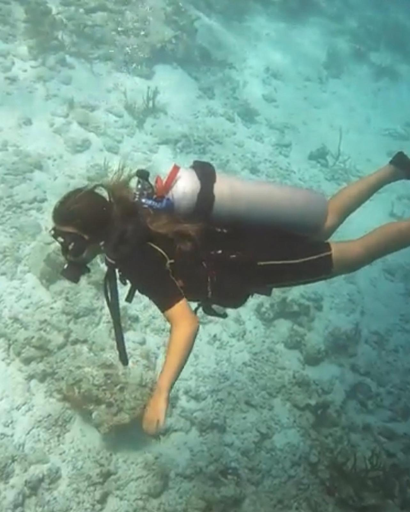

Daniella Hadas

Summary
I am a third-year Industrial Engineering and Management student at Ben-Gurion University, with a strong foundation in programming, data analysis, and operations. I served as an Intelligence Officer and Officer Course Commander in the IDF's elite Maglan commando unit, where I developed leadership, strategic thinking, and adaptability under pressure. Currently seeking opportunities to grow professionally in the tech and industrial fields.
Education
B.Sc. in Industrial Engineering & Management – Ben-Gurion University of the Negev (2022–Present)
Courses completed:
- Java Programming, Object-Oriented Programming (OOP)
- Algorithms
- Database Management (SQL, PowerBI)
High School Diploma – Mekif D High School, Ashkelon (2010–2016)
Graduated with high honors (GPA: 109.8)
Majored in Industrial Engineering and Management (10 units)
Work Experience
-
AI Project Intern – Tadiran (CommBox)
Built conversational flows with GPT and logic-based automation.
-
Teaching Assistant – Mekif D High School
Supported students with tailored strategies.
Skills
- Customer service: ⭐️⭐️⭐️⭐️⭐️
- Microsoft Office Suite: ⭐️⭐️⭐️⭐️⭐️
- Organizational skills: ⭐️⭐️⭐️⭐️⭐️
Awards and Certifications
- 🎖️ Employee of the Month – ABC Inc. (August 2016)
Other
My Hobbies
Contact Me